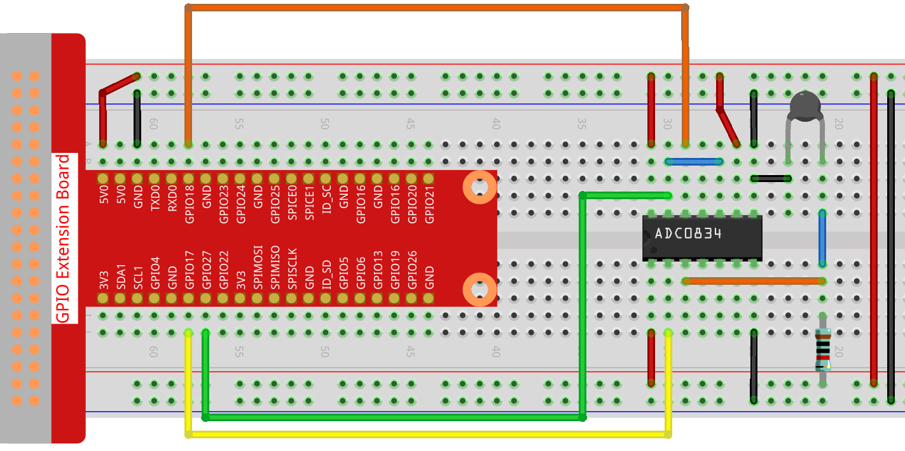

Bemerkung
Hallo und willkommen in der SunFounder Raspberry Pi & Arduino & ESP32 Enthusiasten-Gemeinschaft auf Facebook! Tauchen Sie tiefer ein in die Welt von Raspberry Pi, Arduino und ESP32 mit anderen Enthusiasten.
Warum beitreten?
Expertenunterstützung: Lösen Sie Nachverkaufsprobleme und technische Herausforderungen mit Hilfe unserer Gemeinschaft und unseres Teams.
Lernen & Teilen: Tauschen Sie Tipps und Anleitungen aus, um Ihre Fähigkeiten zu verbessern.
Exklusive Vorschauen: Erhalten Sie frühzeitigen Zugang zu neuen Produktankündigungen und exklusiven Einblicken.
Spezialrabatte: Genießen Sie exklusive Rabatte auf unsere neuesten Produkte.
Festliche Aktionen und Gewinnspiele: Nehmen Sie an Gewinnspielen und Feiertagsaktionen teil.
üëâ Sind Sie bereit, mit uns zu erkunden und zu erschaffen? Klicken Sie auf [hier] und treten Sie heute bei!
2.2.2 Thermistor
Einführung
Genau wie der Fotowiderstand Licht erfassen kann, ist der Thermistor ein temperaturempfindliches elektronisches Gerät, mit dem Funktionen der Temperaturregelung wie z. B. ein Wärmealarm realisiert werden können.
Komponenten

Prinzip
Ein Thermistor ist ein wärmeempfindlicher Widerstand, der eine präzise und vorhersagbare Widerstandsänderung proportional zu kleinen Temperaturänderungen aufweist. Wie sehr sich sein Widerstand ändert, hängt von seiner einzigartigen Zusammensetzung ab. Thermistoren sind Teile einer größeren Gruppe passiver Komponenten. Und im Gegensatz zu ihren Gegenstücken mit aktiven Komponenten können passive Geräte keine Leistungsverstärkung oder Verstärkung für eine Schaltung bereitstellen.
Der Thermistor ist ein empfindliches Element und es gibt zwei Arten: den negativen Temperaturkoeffizienten (NTC) und den positiven Temperaturkoeffizienten (PTC), auch bekannt als NTC und PTC. Sein Widerstand variiert erheblich mit der Temperatur. Der Widerstand des PTC-Thermistors steigt mit der Temperatur, während der Zustand des NTC dem ersteren entgegengesetzt ist. In diesem Experiment verwenden wir NTC.

Das Prinzip ist, dass sich der Widerstand des NTC-Thermistors mit der Temperatur der äußeren Umgebung ändert. Es erfasst die Echtzeit-Temperatur der Umgebung. Wenn die Temperatur höher wird, nimmt der Widerstand des Thermistors ab. Anschließend werden die Spannungsdaten vom A / D-Adapter in digitale Größen umgewandelt. Die Temperatur in Celsius oder Fahrenheit wird über die Programmierung ausgegeben.
In diesem Experiment werden ein Thermistor und ein 10k-Pull-up-Widerstand verwendet. Jeder Thermistor hat einen normalen Widerstand. Hier sind es 10 kOhm, die unter 25 Grad Celsius gemessen werden.
Hier ist die Beziehung zwischen dem Widerstand und der Temperatur:
RT =RN expB(1/TK – 1/TN)
RT ist der Widerstand des NTC-Thermistors bei einer Temperatur von TK.
RN ist der Widerstand des NTC-Thermistors unter der Nenntemperatur TN. Hier beträgt der numerische Wert von RN 10k.
TK ist eine Kelvin-Temperatur und die Einheit ist K. Hier beträgt der numerische Wert von TK 273.15 + Grad Celsius.
TN ist eine Kelvin-Nenntemperatur; Das Gerät ist auch K. Hier beträgt der numerische Wert von TN 273.15+25.
Und B(beta), die Materialkonstante des NTC-Thermistors, wird auch als Wärmeempfindlichkeitsindex mit einem numerischen Wert von 3950 bezeichnet.
exp ist die Abkürzung für exponentiell, und die Basisnummer ist eine natürliche Nummer und entspricht ungefähr 2.7.
Konvertieren Sie diese Formel TK=1/(ln(RT/RN)/B+1/TN) um eine Kelvin-Temperatur zu erhalten, die minus 273.15 Grad Celsius entspricht.
Diese Beziehung ist eine empirische Formel. Sie ist nur dann genau, wenn Temperatur und Widerstand im effektiven Bereich liegen.
Schematische Darstellung


Experimentelle Verfahren
Schritt 1: Bauen Sie die Schaltung auf.
{kind=link}
Für Benutzer in C-Sprache
Schritt 2: Gehen Sie zum Ordner der Kode.
cd ~/davinci-kit-for-raspberry-pi/c/2.2.2/
Schritt 3: Kompilieren Sie die Kode.
gcc 2.2.2_Thermistor.c -lwiringPi -lm
Bemerkung
-lm dient zum Laden der Bibliotheksmathematik. Nicht weglassen, sonst wird ein Fehler gemacht.
Schritt 4: Führen Sie die ausführbare Datei aus.
sudo ./a.out
Während die Kode ausgeführt wird, erkennt der Thermistor die Umgebungstemperatur, die nach Abschluss der Programmberechnung auf dem Bildschirm angezeigt wird.
Code
#include <wiringPi.h>
#include <stdio.h>
#include <math.h>
typedef unsigned char uchar;
typedef unsigned int uint;
#define ADC_CS 0
#define ADC_CLK 1
#define ADC_DIO 2
uchar get_ADC_Result(uint channel)
{
uchar i;
uchar dat1=0, dat2=0;
int sel = channel > 1 & 1;
int odd = channel & 1;
pinMode(ADC_DIO, OUTPUT);
digitalWrite(ADC_CS, 0);
// Start bit
digitalWrite(ADC_CLK,0);
digitalWrite(ADC_DIO,1); delayMicroseconds(2);
digitalWrite(ADC_CLK,1); delayMicroseconds(2);
//Single End mode
digitalWrite(ADC_CLK,0);
digitalWrite(ADC_DIO,1); delayMicroseconds(2);
digitalWrite(ADC_CLK,1); delayMicroseconds(2);
// ODD
digitalWrite(ADC_CLK,0);
digitalWrite(ADC_DIO,odd); delayMicroseconds(2);
digitalWrite(ADC_CLK,1); delayMicroseconds(2);
//Select
digitalWrite(ADC_CLK,0);
digitalWrite(ADC_DIO,sel); delayMicroseconds(2);
digitalWrite(ADC_CLK,1);
digitalWrite(ADC_DIO,1); delayMicroseconds(2);
digitalWrite(ADC_CLK,0);
digitalWrite(ADC_DIO,1); delayMicroseconds(2);
for(i=0;i<8;i++)
{
digitalWrite(ADC_CLK,1); delayMicroseconds(2);
digitalWrite(ADC_CLK,0); delayMicroseconds(2);
pinMode(ADC_DIO, INPUT);
dat1=dat1<<1 | digitalRead(ADC_DIO);
}
for(i=0;i<8;i++)
{
dat2 = dat2 | ((uchar)(digitalRead(ADC_DIO))<<i);
digitalWrite(ADC_CLK,1); delayMicroseconds(2);
digitalWrite(ADC_CLK,0); delayMicroseconds(2);
}
digitalWrite(ADC_CS,1);
pinMode(ADC_DIO, OUTPUT);
return(dat1==dat2) ? dat1 : 0;
}
int main(void)
{
unsigned char analogVal;
double Vr, Rt, temp, cel, Fah;
if(wiringPiSetup() == -1){ //when initialize wiring failed,print messageto screen
printf("setup wiringPi failed !");
return 1;
}
pinMode(ADC_CS, OUTPUT);
pinMode(ADC_CLK, OUTPUT);
while(1){
analogVal = get_ADC_Result(0);
Vr = 5 * (double)(analogVal) / 255;
Rt = 10000 * (double)(Vr) / (5 - (double)(Vr));
temp = 1 / (((log(Rt/10000)) / 3950)+(1 / (273.15 + 25)));
cel = temp - 273.15;
Fah = cel * 1.8 +32;
printf("Celsius: %.2f C Fahrenheit: %.2f F\n", cel, Fah);
delay(100);
}
return 0;
}
Code Erklärung
#include <math.h>
Es gibt eine C-Numerik-Bibliothek, die eine Reihe von Funktionen deklariert, um allgemeine mathematische Operationen und Transformationen zu berechnen.
analogVal = get_ADC_Result(0);
Mit dieser Funktion wird der Wert des Thermistors abgelesen.
Vr = 5 * (double)(analogVal) / 255;
Rt = 10000 * (double)(Vr) / (5 - (double)(Vr));
temp = 1 / (((log(Rt/10000)) / 3950)+(1 / (273.15 + 25)));
cel = temp - 273.15;
Fah = cel * 1.8 +32;
printf("Celsius: %.2f C Fahrenheit: %.2f F\n", cel, Fah);
Diese Berechnungen wandeln die Thermistorwerte in Celsiuswerte um.
Vr = 5 * (double)(analogVal) / 255;
Rt = 10000 * (double)(Vr) / (5 - (double)(Vr));
Diese beiden Kodezeilen berechnen die Spannungsverteilung mit dem analogen Lesewert, um Rt (Widerstand des Thermistors) zu erhalten.
temp = 1 / (((log(Rt/10000)) / 3950)+(1 / (273.15 + 25)));
Diese Kode bezieht sich auf das Einstecken von Rt in die Formel TK=1/(ln(RT/RN)/B+1/TN) ,um die Kelvin-Temperatur zu erhalten.
temp = temp - 273.15;
Wandeln Sie die Kelvin-Temperatur in Grad Celsius um.
Fah = cel * 1.8 +32;
Konvertieren Sie Grad Celsius in Fahrenheit.
printf("Celsius: %.2f C Fahrenheit: %.2f F\n", cel, Fah);
Drucken Sie Celsius, Fahrenheit und ihre Einheiten auf dem Display.
Für Python-Sprachbenutzer
Schritt 2: Gehen Sie zum Ordner der Kode.
cd ~/davinci-kit-for-raspberry-pi/python/
Schritt 3: Führen Sie die ausführbare Datei aus.
sudo python3 2.2.2_Thermistor.py
Während die Kode ausgeführt wird, erkennt der Thermistor die Umgebungstemperatur, die nach Abschluss der Programmberechnung auf dem Bildschirm angezeigt wird.
Code
Bemerkung
Sie können den folgenden Code Ändern/Zurücksetzen/Kopieren/Ausführen/Stoppen . Zuvor müssen Sie jedoch zu einem Quellcodepfad wie davinci-kit-for-raspberry-pi/python gehen.
import RPi.GPIO as GPIO
import ADC0834
import time
import math
def init():
ADC0834.setup()
def loop():
while True:
analogVal = ADC0834.getResult()
Vr = 5 * float(analogVal) / 255
Rt = 10000 * Vr / (5 - Vr)
temp = 1/(((math.log(Rt / 10000)) / 3950) + (1 / (273.15+25)))
Cel = temp - 273.15
Fah = Cel * 1.8 + 32
print ('Celsius: %.2f C Fahrenheit: %.2f F' % (Cel, Fah))
time.sleep(0.2)
if __name__ == '__main__':
init()
try:
loop()
except KeyboardInterrupt:
ADC0834.destroy()
Code Erklärung
import math
Es gibt eine numerische Bibliothek, die eine Reihe von Funktionen deklariert, um allgemeine mathematische Operationen und Transformationen zu berechnen.
analogVal = ADC0834.getResult()
Mit dieser Funktion wird der Wert des Thermistors abgelesen.
Vr = 5 * float(analogVal) / 255
Rt = 10000 * Vr / (5 - Vr)
temp = 1/(((math.log(Rt / 10000)) / 3950) + (1 / (273.15+25)))
Cel = temp - 273.15
Fah = Cel * 1.8 + 32
print ('Celsius: %.2f °C Fahrenheit: %.2f ℉' % (Cel, Fah))
Diese Berechnungen wandeln die Thermistorwerte in Grad Celsius und Fahrenheit um.
Vr = 5 * float(analogVal) / 255
Rt = 10000 * Vr / (5 - Vr)
Diese beiden Kodezeilen berechnen die Spannungsverteilung mit dem analogen Lesewert, um Rt (Widerstand des Thermistors) zu erhalten.
temp = 1/(((math.log(Rt / 10000)) / 3950) + (1 / (273.15+25)))
Diese Kode bezieht sich auf das Einstecken von Rt in die Formel TK=1/(ln(RT/RN)/B+1/TN) ,um die Kelvin-Temperatur zu erhalten.
temp = temp - 273.15
Wandeln Sie die Kelvin-Temperatur in Grad Celsius um.
Fah = Cel * 1.8 + 32
Konvertieren Sie den Celsius-Grad in Fahrenheit-Grad.
print ('Celsius: %.2f °C Fahrenheit: %.2f ℉' % (Cel, Fah))
Drucken Sie Celsius, Fahrenheit und ihre Einheiten auf dem Display.
Phänomen Bild